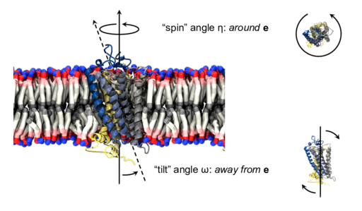
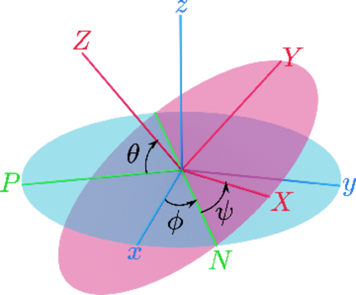
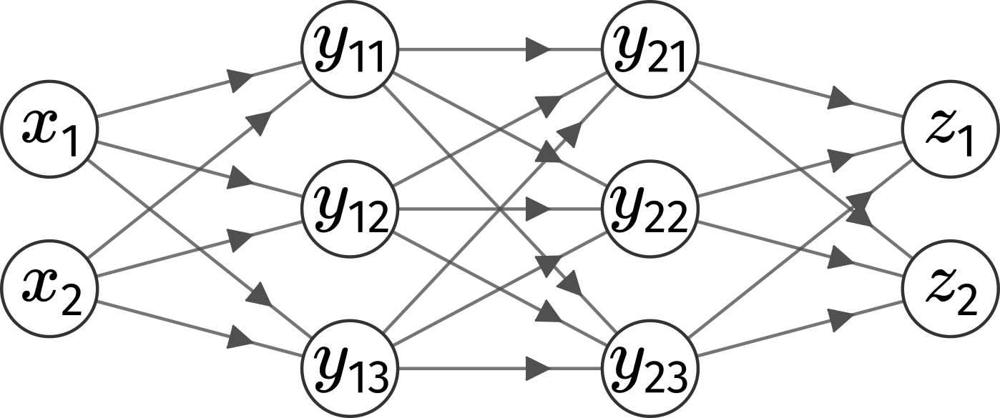

A collective variable is defined by the keyword colvar followed by its configuration options contained within curly braces:
colvar {
name xi
<other options>
function_name {
<parameters>
<atom selection>
}
}
There are multiple ways of defining a variable:
A user-defined mathematical function of the existing components (see list in section 4.1), or of the atomic coordinates directly (see the cartesian keyword in 4.10.1). The function is defined through the keyword customFunction (see 4.19 for details).
A user-defined Tcl function of the existing components (see list in section 4.1), or of the atomic coordinates directly (see the cartesian keyword in 4.10.1). The function is provided by a separate Tcl script, and referenced through the keyword scriptedFunction (see 4.20 for details).
Choosing a component (function) is the only parameter strictly required to define a collective variable. It is also highly recommended to specify a name for the variable:
name — Name of this colvar
Default: “colvar” + numeric id [ string, context: colvar ]
The name is an unique case-sensitive string which allows the Colvars module to identify this colvar unambiguously; it is also used in the trajectory file to label to the columns corresponding to this colvar.
In this context, the function that computes a colvar is called a component. A component’s choice and definition consists of including in the variable’s configuration a keyword indicating the type of function (e.g. rmsd), followed by a definition block specifying the atoms involved (see 5) and any additional parameters (cutoffs, “reference” values, …). At least one component must be chosen to define a variable: if none of the keywords listed below is found, an error is raised.
The following components implement functions with a scalar value (i.e. a real number):
distance: distance between two groups;
distanceZ: projection of a distance vector on an axis;
distanceXY: projection of a distance vector on a plane;
distanceInv: mean distance between two groups of atoms (e.g. NOE-based distance);
angle: angle between three groups;
dihedral: torsional (dihedral) angle between four groups;
dipoleAngle: angle between two groups and dipole of a third group;
dipoleMagnitude: magnitude of the dipole of a group of atoms;
polarTheta: polar angle of a group in spherical coordinates;
polarPhi: azimuthal angle of a group in spherical coordinates;
eulerPhi: Roll angle of rotation from references coordinates;
eulerTheta: Pitch angle of rotation from references coordinates;
eulerPsi: Yaw angle of rotation from references coordinates;
coordNum: coordination number between atoms in two groups;
groupCoord: coordination number between the centers of two groups of atoms;
selfCoordNum: coordination number of atoms within a group;
hBond: hydrogen bond between two atoms;
rmsd: root mean square deviation (RMSD) from a set of reference coordinates;
eigenvector: projection of the atomic coordinates on a vector;
orientationAngle: angle of the best-fit rotation from a set of reference coordinates;
orientationProj: cosine of orientationProj;
spinAngle: projection orthogonal to an axis of the best-fit rotation from a set of reference coordinates;
tilt: projection on an axis of the best-fit rotation from a set of reference coordinates;
gyration: radius of gyration of a group of atoms;
inertia: moment of inertia of a group of atoms;
inertiaZ: moment of inertia of a group of atoms around a chosen axis;
alpha: -helix content of a protein segment.
dihedralPC: projection of protein backbone dihedrals onto a dihedral principal component.
alchLambda: alchemical lambda parameter (for controlling the back-end).
alchFlambda: force along alchLambda.
Some components do not return scalar, but vector values:
distanceVec: distance vector between two groups (length: 3);
distanceDir: unit vector parallel to distanceVec (length: 3);
cartesian: vector of atomic Cartesian coordinates (length: times the number of Cartesian components requested, X, Y or Z);
distancePairs: vector of mutual distances (length: );
orientation: best-fit rotation, expressed as a unit quaternion (length: 4).
The types of components used in a colvar (scalar or not) determine the properties of that colvar, and particularly which biasing or analysis methods can be applied.
What if “X” is not listed? If a function type is not available on this list, it may be possible to define it as a polynomial superposition of existing ones (see 4.18), a custom function (see 4.19).
In the rest of this section, all available component types are listed, along with their physical units and their ranges of values, if limited. Such ranges are often used to define automatically default sampling intervals, for example by setting the parameters lowerBoundary and upperBoundary in the parent colvar.
For each type of component, the available configurations keywords are listed: when two components share certain keywords, the second component references to the documentation of the first one that uses that keyword. The very few keywords that are available for all types of components are listed in a separate section 4.15.
When copying over atomic coordinates from Tinker-HP, Colvars also copies its boundary conditions and unit cell vectors. Periodic or non-periodic boundary conditions are supported for each direction independently, thus allowing for mixed-periodicity conditions if Tinker-HP allows them. When using triclinic unit cells, tilt factors up to 1/2 are supported by looping over one additional layer of adjacent periodic images around the simulation cell to find the minimum image. The use of tilt factors beyond 1/2 is not recommended, and may lead to slower performance.
For all colvar components implemented by Colvars internal code, the following rules apply:
Distance vectors between two coordinates , are calculated following the minimum-image convention by default, unless forceNoPBC is enabled. ( and may be either individual atomic coordinates, or centers of mass of two groups.)
For all other functions of multiple atomic coordinates, , it is assumed that all atoms that are part of the same group are in the same periodic unit cell (see 5.3).
forceNoPBC — Use absolute rather than minimum-image distances?
Default: no [ boolean, context: any component ]
If this keyword is set to yes, PBCs will be ignored when calculating this component. This is only useful in a limited number of special cases, e.g. to describe the distance between remote points of a single macromolecule, which cannot be split across periodic cell boundaries, and for which the minimum-image distance might give the wrong result because of a relatively small periodic cell.
Using forceNoPBC yes when defining a distance { ... } function lets Colvars ignore the minimum-image convention when computing the distance between the centers of mass of group1 and group2. (Note that the centers of mass themselves are always calculated as weighted averages anyway).
colvar {
name d
distance {
forceNoPBC yes
group1 { … }
group2 { … }
}
}
The distance {...} block defines a distance component between the two atom groups, group1 and group2.
List of keywords (see also 4.2, 4.15, 4.16 and 4.18 for additional options):
group1 — First group of atoms
[ Atom group, context: distance ]
First group of atoms.
group2 — analogous to group1
oneSiteTotalForce — Measure total force on group 1 only?
Default: no [ boolean, context: angle, dipoleAngle, dihedral ]
forceNoPBC — Use absolute rather than minimum-image distances? (see description)
Default: no
The value returned is a positive number (in Å), ranging from to the largest possible interatomic distance within the chosen boundary conditions (with PBCs, the minimum image convention is used unless the forceNoPBC option is set).
The distanceZ {...} block defines a distance projection component, which can be seen as measuring the distance between two groups projected onto an axis, or the position of a group along such an axis. The axis can be defined using either one reference group and a constant vector, or dynamically based on two reference groups. One of the groups can be set to a dummy atom to allow the use of an absolute Cartesian coordinate.
List of keywords (see also 4.2, 4.15, 4.16 and 4.18 for additional options):
main — Main group of atoms
[ Atom group, context: distanceZ ]
Group of atoms whose position is measured.
ref — Reference group of
atoms
[ Atom group, context: distanceZ ]
Reference group of atoms. The position of its center of mass is noted below.
ref2 — Secondary reference
group
Default: none [ Atom group, context: distanceZ ]
Optional group of reference atoms, whose position can be used to define a dynamic projection axis: . In this case, the origin is , and the value of the component is .
axis — Projection axis
Default: (0.0, 0.0, 1.0) [ (x, y, z) triplet, context: distanceZ ]
This vector will be normalized to define a projection axis for the distance vector joining the centers of groups ref and main. The value of the component is then . The vector should be written as three components separated by commas and enclosed in parentheses.
oneSiteTotalForce — same definition as oneSiteTotalForce (distance component)
forceNoPBC — Use absolute rather than minimum-image distances? (see description)
Default: no
This component returns a number (in Å) whose range is determined by the chosen boundary conditions. For instance, if the axis is used in a simulation with periodic boundaries, the returned value ranges between and , where is the box length along (this behavior is disabled if forceNoPBC is set).
The distanceXY {...} block defines a distance projected on a plane, and accepts the same keywords as the component distanceZ, i.e. main, ref, either ref2 or axis, and oneSiteTotalForce. It returns the norm of the projection of the distance vector between main and ref onto the plane orthogonal to the axis. The axis is defined using the axis parameter or as the vector joining ref and ref2 (see distanceZ above).
List of keywords (see also 4.2, 4.15, 4.16 and 4.18 for additional options):
main — same definition as main (distanceZ component)
ref — same definition as ref (distanceZ component)
ref2 — same definition as ref2 (distanceZ component)
axis — same definition as axis (distanceZ component)
oneSiteTotalForce — same definition as oneSiteTotalForce (distance component)
forceNoPBC — Use absolute rather than minimum-image distances? (see description)
Default: no
The distanceVec component computes the 3-dimensional vector joining the centers of mass of group1 and group2. Its values are therefore multi-dimensional and are subject to the restrictions listed in 4.17. Moreover, when computing differences between two different values of a distanceVec variable the minimum-image convention is assumed (unless forceNoPBC is enabled).
List of keywords (see also 4.2, 4.15, 4.16 and 4.18 for additional options):
group1 — same definition as group1 (distance component)
group2 — analogous to group1
oneSiteTotalForce — same definition as oneSiteTotalForce (distance component)
forceNoPBC — Use absolute rather than minimum-image distances? (see description)
Default: no
The distanceDir {...} block defines a distance unit vector component, which accepts the same keywords as the component distance: group1, group2, and forceNoPBC. It returns a 3-dimensional unit vector , with .
This multi-dimensional variable has two intrinsic degrees of freedom: however, these cannot be sampled independently as one-dimensional variables. A decomposition in two dimensions can be done using polarTheta and polarPhi angles, with the caveat that the latter is ill-defined when the former approaches 0∘ or 180∘.
The distance between two values of distanceDir is calculated internally as the angle (in radians) between the two unit vectors: this definition adapts the standard Euclidean distance to the unit sphere, to ensure that restraint forces comply with the mathematical constraint.
List of keywords (see also 4.2, 4.15, 4.16 and 4.18 for additional options):
group1 — same definition as group1 (distance component)
group2 — analogous to group1
oneSiteTotalForce — same definition as oneSiteTotalForce (distance component)
forceNoPBC — Use absolute rather than minimum-image distances? (see description)
Default: no
The distanceInv {...} block defines a generalized mean distance between two groups of atoms 1 and 2, where each distance is taken to the power :
| (2) |
where is the distance between atoms and in groups 1 and 2 respectively, and is an even integer.
List of keywords (see also 4.2, 4.15, 4.16 and 4.18 for additional options):
group1 — same definition as group1 (distance component)
group2 — analogous to group1
oneSiteTotalForce — same definition as oneSiteTotalForce (distance component)
exponent — Exponent in equation 2
Default: 6 [ positive even integer, context: distanceInv ]
Defines the exponent to which the individual distances are elevated before averaging. The default value of 6 is useful for example to applying restraints based on NOE-measured distances.
forceNoPBC — Use absolute rather than minimum-image distances? (see description)
Default: no
This component returns a number ranging from to the largest possible distance within the chosen boundary conditions.
The angle {...} block defines an angle, and contains the three blocks group1, group2 and group3, defining the three groups. It returns an angle (in degrees) within the interval .
List of keywords (see also 4.2, 4.15, 4.16 and 4.18 for additional options):
group1 — same definition as group1 (distance component)
group2 — analogous to group1
group3 — analogous to group1
oneSiteTotalForce — same definition as oneSiteTotalForce (distance component)
forceNoPBC — Use absolute rather than minimum-image distances? (see description)
Default: no
The dipoleAngle {...} block defines an angle, and contains the three blocks group1, group2 and group3, defining the three groups, being group1 the group where dipole is calculated. It returns an angle (in degrees) within the interval .
List of keywords (see also 4.2, 4.15, 4.16 and 4.18 for additional options):
group1 — same definition as group1 (distance component)
group2 — analogous to group1
group3 — analogous to group1
oneSiteTotalForce — same definition as oneSiteTotalForce (distance component)
forceNoPBC — Use absolute rather than minimum-image distances? (see description)
Default: no
The dihedral {...} block defines a torsional angle, and contains the blocks group1, group2, group3 and group4, defining the four groups. It returns an angle (in degrees) within the interval . The Colvars module calculates all the distances between two angles taking into account periodicity. For instance, reference values for restraints or range boundaries can be defined by using any real number of choice.
List of keywords (see also 4.2, 4.15, 4.16 and 4.18 for additional options):
group1 — same definition as group1 (distance component)
group2 — analogous to group1
group3 — analogous to group1
group4 — analogous to group1
oneSiteTotalForce — same definition as oneSiteTotalForce (distance component)
forceNoPBC — Use absolute rather than minimum-image distances? (see description)
Default: no
The polarTheta {...} block defines the polar angle in spherical coordinates, for the center of mass of a group of atoms described by the block atoms. It returns an angle (in degrees) within the interval . To obtain spherical coordinates in a frame of reference tied to another group of atoms, use the fittingGroup (5.2) option within the atoms block. An example is provided in file examples/11_polar_angles.in of the Colvars public repository.
List of keywords (see also 4.2, 4.15, 4.16 and 4.18 for additional options):
atoms — Group of atoms defining this function
[ Atom group, context: polarPhi ]
Defines the group of atoms for the COM of which the angle should be calculated.
forceNoPBC — Use absolute rather than minimum-image distances? (see description)
Default: no
The polarPhi {...} block defines the azimuthal angle in spherical coordinates, for the center of mass of a group of atoms described by the block atoms. It returns an angle (in degrees) within the interval . The Colvars module calculates all the distances between two angles taking into account periodicity. For instance, reference values for restraints or range boundaries can be defined by using any real number of choice. To obtain spherical coordinates in a frame of reference tied to another group of atoms, use the fittingGroup (5.2) option within the atoms block. An example is provided in file examples/11_polar_angles.in of the Colvars public repository.
List of keywords (see also 4.2, 4.15, 4.16 and 4.18 for additional options):
atoms — Group of atoms defining this function
[ Atom group, context: polarPhi ]
Defines the group of atoms for the COM of which the angle should be calculated.
forceNoPBC — Use absolute rather than minimum-image distances? (see description)
Default: no
Note: polarPhi is ill-defined when the corresponding polarTheta component is close to 0∘ or 180∘; please take measures to avoid sampling these configurations in your simulations.
The coordNum {...} block defines a coordination number (or number of contacts), which calculates the function , where is the “cutoff” distance, and and are exponents that can control its long range behavior and stiffness Iannuzzi et al. (2003). This function is summed over all pairs of atoms in group1 and group2:
| (3) |
List of keywords (see also 4.2, 4.15, 4.16 and 4.18 for additional options):
group1 — same definition as group1 (distance component)
group2 — analogous to group1
cutoff — “Interaction” distance (Å)
Default: 4.0 Å [ positive decimal, context: coordNum ]
This number defines the switching distance to define an interatomic contact: for , the switching function is close to 1, at it has a value of ( with the default and ), and at it goes to zero approximately like . Hence, for a proper behavior, must be larger than .
cutoff3 — Reference distance vector (Å)
Default: (4.0, 4.0, 4.0) Å [ “(x, y, z)” triplet of positive decimals, context: coordNum ]
The three components of this vector define three different cutoffs for each direction. This option is mutually exclusive with cutoff.
expNumer — Numerator exponent
Default: 6 [ positive even integer, context: coordNum ]
This number defines the exponent for the switching function.
expDenom — Denominator exponent
Default: 12 [ positive even integer, context: coordNum ]
This number defines the exponent for the switching function.
group1CenterOnly — Use only group1’s center of
mass
Default: off [ boolean, context: coordNum ]
If this option is on, only contacts between the center of mass of group1 and atoms of group2 are calculated (by default, the sum extends over all pairs of atoms in group1 and group2). If group1 is a dummyAtom, this option is set to yes by default.
group2CenterOnly — Use only group2’s center of
mass
Default: off [ boolean, context: coordNum ]
If this option is on, only contacts between each atoms in group1 and the center of mass of group2 are calculated (by default, the sum extends over all pairs of atoms in group1 and group2). If group2 is a dummyAtom, this option is set to yes by default.
tolerance — Pairlist control
Default: 0.0 [ decimal, context: coordNum ]
This controls the pair list feature, dictating the minimum value for each summation element in Eq. 3 such that the pair that contributed the summation element is included in subsequent simulation timesteps until the next pai r list recalculation. For most applications, this value should be small (eg. 0.001) to avoid missing important contributions to the overall sum. Higher values will improve performance by reducing the number of pairs that contribute to the sum. Values above 1 will exclude all possible pair interactions. Similarly, values below 0 will never exclude a pair from consideration. To ensure continuous forces, Eq. 3 is further modified by subtracting the tolerance and then rescaling so that each pair covers the range .
pairListFrequency — Pairlist regeneration frequency
Default: 100 [ positive integer, context: coordNum ]
This controls the pairlist feature, dictating how many steps are taken between regenerating pair lists if the tolerance is greater than 0.
forceNoPBC — Use absolute rather than minimum-image distances? (see description)
Default: no
This component returns a dimensionless number, which ranges from 0 (all interatomic distances are much larger than the cutoff) to (all possible pairwise distances are much smaller than the cutoff). The computational cost also grows with the number of pairwise distances calculated, unless either group1CenterOnly or group2CenterOnly are used. Setting could mitigate this by looping over pairs less frequently than every step.
The groupCoord {...} block defines a coordination number between virtual particles located at the centers of mass of group1 and group2. Its value is between 0 and 1. It is a essentially shorthand for coordNum with the options group1CenterOnly yes and group2CenterOnly yes. It takes the same parameters as coordNum.
The selfCoordNum {...} block defines a coordination number similarly to the component coordNum, but the function is summed over atom pairs within group1:
| (4) |
The keywords accepted by selfCoordNum are a subset of those accepted by coordNum, namely group1 (here defining all of the atoms to be considered), cutoff, expNumer, and expDenom.
List of keywords (see also 4.2, 4.15, 4.16 and 4.18 for additional options):
group1 — same definition as group1 (coordNum component)
cutoff — same definition as cutoff (coordNum component)
cutoff3 — same definition as cutoff3 (coordNum component)
expNumer — same definition as expNumer (coordNum component)
expDenom — same definition as expDenom (coordNum component)
tolerance — same definition as tolerance (coordNum component)
pairListFrequency — same definition as pairListFrequency (coordNum component)
forceNoPBC — Use absolute rather than minimum-image distances? (see description)
Default: no
This component returns a dimensionless number, which ranges from approximately 0 (all interatomic distances much larger than the cutoff) to (all distances within the cutoff). For performance reasons, group1 should be of limited size, because the cost of the loop over all pairs grows as .
The hBond {...} block defines a hydrogen bond, implemented as a coordination number (eq. 3) between the donor and the acceptor atoms. Therefore, it accepts the same options cutoff (with a different default value of 3.3 Å), expNumer (with a default value of 6) and expDenom (with a default value of 8). Unlike coordNum, it requires two atom numbers, acceptor and donor, to be defined. It returns a dimensionless number, with values between 0 (acceptor and donor far outside the cutoff distance) and 1 (acceptor and donor much closer than the cutoff).
List of keywords (see also 4.2, 4.15, 4.16 and 4.18 for additional options):
acceptor — Number of the acceptor atom
[ positive integer, context: hBond ]
Number that uses the same convention as atomNumbers.
donor — analogous to acceptor
cutoff — same definition as cutoff (coordNum component)
Note: default value is 3.3 Å.
expNumer — same definition as expNumer (coordNum component)
Note: default value is 6.
expDenom — same definition as expDenom (coordNum component)
Note: default value is 8.
forceNoPBC — Use absolute rather than minimum-image distances? (see description)
Default: no
The block rmsd {...} defines the root mean square replacement (RMSD) of a group of atoms with respect to a reference structure. For each set of coordinates , the colvar component rmsd calculates the optimal rotation that best superimposes the coordinates onto a set of reference coordinates . Both the current and the reference coordinates are centered on their centers of geometry, and . The root mean square displacement is then defined as:
| (5) |
The optimal rotation is calculated within the formalism developed in ref. Coutsias et al., 2004, which guarantees a continuous dependence of with respect to .
List of keywords (see also 4.2, 4.15, 4.16 and 4.18 for additional options):
atoms — Group of atoms defining this function
[ Atom group, context: rmsd ]
Defines the group of atoms of which the RMSD should be calculated. Optimal fit options (such as refPositions and rotateToReference) should typically NOT be set within this block. Exceptions to this rule are the special cases discussed in the Advanced usage paragraph below.
refPositions — Reference coordinates
[ space-separated list of (x, y, z) triplets, context: rmsd ]
This option (mutually exclusive with refPositionsFile) sets the reference coordinates for RMSD calculation, and uses these to compute the roto-translational fit. See the equivalent option refPositions within the atom group definition for details on acceptable formats and other features.
refPositionsFile — Reference coordinates file
[ UNIX filename, context: rmsd ]
This option (mutually exclusive with refPositions) sets the reference coordinates for RMSD calculation, and uses these to compute the roto-translational fit. See the equivalent option refPositionsFile within the atom group definition for details on acceptable file formats and other features.
atomPermutation — Alternate ordering of atoms for RMSD computation
[ List of atom numbers, context: rmsd ]
If defined, this parameter defines a re-ordering (permutation) of the 1-based atom numbers that
can be used to compute the RMSD, typically due to molecular symmetry.
This parameter can be specified multiple times, each one defining a new permutation:
the returned RMSD value is the minimum over the set of permutations.
For example, if the atoms making up the group are 6, 7, 8, 9, and atoms 7, 8, and 9
are invariant by circular permutation (as the hydrogens in a CH3 group), a
symmetry-adapted RMSD would be obtained by adding:
atomPermutation 6 8 9 7
atomPermutation 6 9 7 8
This will result in these 2 atom orders being considered in addition to the order used when defining the atom group.
Note that this does not affect the least-squares roto-translational fit.
Therefore, this feature is mostly useful when using custom fitting parameters within the
atom group, such as fittingGroup, or when fitting
is disabled altogether. For details, see ref. Ebrahimi and Hénin, 2022.
forceNoPBC — Use absolute rather than minimum-image distances? (see description)
Default: no
This component returns a positive real number (in Å).
In the standard usage as described above, the rmsd component calculates a minimum RMSD, that is, current coordinates are optimally fitted onto the same reference coordinates that are used to compute the RMSD value. The fit itself is handled by the atom group object, whose parameters are automatically set by the rmsd component. For very specific applications, however, it may be useful to control the fitting process separately from the definition of the reference coordinates, to evaluate various types of non-minimal RMSD values. This can be achieved by setting the related options (refPositions, etc.) explicitly in the atom group block. This allows for the following non-standard cases:
applying the optimal translation, but no rotation (rotateToReference off), to bias or restrain the shape and orientation, but not the position of the atom group;
applying the optimal rotation, but no translation (centerToReference off), to bias or restrain the shape and position, but not the orientation of the atom group;
disabling the application of optimal roto-translations, which lets the RMSD component describe the deviation of atoms from fixed positions in the laboratory frame: this allows for custom positional restraints within the Colvars module;
fitting the atomic positions to different reference coordinates than those used in the RMSD calculation itself (by specifying refPositions or refPositionsFile within the atom group as well as within the rmsd block);
applying the optimal rotation and/or translation from a separate atom group, defined through fittingGroup: the RMSD then reflects the deviation from reference coordinates in a separate, moving reference frame (see example in the section on fittingGroup).
The block eigenvector {...} defines the projection of the coordinates of a group of atoms (or more precisely, their deviations from the reference coordinates) onto a vector in , where is the number of atoms in the group. The computed quantity is the total projection:
| (6) |
where, as in the rmsd component, is the optimal rotation matrix, and are the centers of geometry of the current and reference positions respectively, and are the components of the vector for each atom. Example choices for are an eigenvector of the covariance matrix (essential mode), or a normal mode of the system. It is assumed that : otherwise, the Colvars module centers the automatically when reading them from the configuration.
List of keywords (see also 4.2, 4.15, 4.16 and 4.18 for additional options):
atoms — same definition as atoms (rmsd component)
refPositions — same definition as refPositions (rmsd component)
refPositionsFile — same definition as refPositionsFile (rmsd component)
vector — Vector components
[ space-separated list of (x, y, z) triplets, context: eigenvector ]
This option (mutually exclusive with vectorFile) sets the values of the vector components.
vectorFile — file containing vector components
[ UNIX filename, context: eigenvector ]
This option (mutually exclusive with vector) sets the name of an XYZ (3.7.3) coordinate file containing the vector components. Note: Reading data from a coordinate file may entail an automatic unit conversion if the length unit currently used by the MD engine is not Å. If this is not the desired behavior, this can be remedied using the normalizeVector option described below.
normalizeVector — Normalize the vector components when reading them?
Default: off [ boolean, context: eigenvector ]
If this flag is activated, the norm of the vector is set equal to 1 by automatically rescaling all the components ; alternatively, the value of is printed.
differenceVector — The -dimensional vector is the difference between vector and refPositions
Default: off [ boolean, context: eigenvector ]
If this option is on, the numbers provided by vector are interpreted as another set of positions, : the vector is then defined as . This allows to conveniently define a colvar as a projection on the linear transformation between two sets of positions, “A” and “B”. If this flag is on, the vector is normalized so that when the atoms are at the set of positions “A” and at the set of positions “B”. Setting normalizeVector on overrides this behavior.
forceNoPBC — Use absolute rather than minimum-image distances? (see description)
Default: no
The block gyration {...} defines the parameters for calculating the radius of gyration of a group of atomic positions with respect to their center of geometry, :
| (7) |
This component must contain one atoms {...} block to define the atom group, and returns a positive number, expressed in Å.
The block inertia {...} defines the parameters for calculating the total moment of inertia of a group of atomic positions with respect to their center of geometry, :
| (8) |
Note that all atomic masses are set to 1 for simplicity. This component must contain one atoms {...} block to define the atom group, and returns a positive number, expressed in Å2.
The dipoleMagnitude {...} block defines the dipole magnitude of a group of atoms (norm of the dipole moment’s vector), being atoms the group where dipole magnitude is calculated. It returns the magnitude in elementary charge times Å.
The block inertiaZ {...} defines the parameters for calculating the component along the axis of the moment of inertia of a group of atomic positions with respect to their center of geometry, :
| (9) |
Note that all atomic masses are set to 1 for simplicity. This component must contain one atoms {...} block to define the atom group, and returns a positive number, expressed in Å2.
List of keywords (see also 4.2, 4.15, 4.16 and 4.18 for additional options):
atoms — same definition as atoms (rmsd component)
axis — Projection axis
Default: (0.0, 0.0, 1.0) [ (x, y, z) triplet, context: inertiaZ ]
The three components of this vector define (when normalized) the projection axis .
forceNoPBC — Use absolute rather than minimum-image distances? (see description)
Default: no
The variables discussed in this section quantify the rotations of macromolecules (or other quasi-rigid objects) from a given set of reference coordinates to the current coordinates. Such rotations are computed following the same method used for best-fit RMSDs (see rmsd and fittingGroup). The underlying mathematical formalism is described in refs. Coutsias et al., 2004; Daniilidis, 1999; Hu et al., 2006, and the implementation in ref. Fiorin et al., 2013.
The first of the functions described is the orientation, which describes the full rotation as a unit quaternion , i.e. 4 numbers with one constraint (3 degrees of freedom). The quaternion is one of only two representations that are both complete and accurate, the other being a unit matrix with 3 independent parameters. Although is used internally in the Colvars module for features such as the rmsd function and the fittingGroup option, its direct use as a collective variable is mostly limited to fixed or moving restraints.
The two functions orientationAngle and orientationProj, with the latter being the cosine of the former, represent the amplitude of the full rotation described by , regardless of the direction of its axis. As one-dimensional scalar variables, both orientationAngle and orientationProj are a much reduced simplification of the full rotation. However, they can be used in a variety of methods including both restraints and PMF computations.
A slightly more complete parametrization is achieved by decomposing the full rotation into the two parameters, tilt and spinAngle. These quantify the amplitudes of two independent sub-rotations away from a certain axis , and around that axis , respectively. The axis is chosen by the user, and is by default the Z axis: under that choice, tilt is equivalent to the sine of the Euler “pitch” angle , and spinAngle to the combined effect of the other two angles and . This parameterization is mathematically well defined for most orientations, including when the current coordinates are almost completely aligned with the reference ones. However, a mathematical singularity affects the spinAngle function near configurations where the value of the corresponding tilt is -1 (i.e. a rotation around an axis orthogonal to ). Therefore, tilt and spinAngle are most useful together when it is known that the range of possible orientations are somewhat limited. For example, a membrane protein that is unable to fully flip around the membrane plane, or a molecule whose tilt has a wall restraint applied to it; example inputs for each case are provided below.
Lastly, the traditional Euler angles are also available as the functions eulerPhi, eulerTheta and eulerPsi. Altogether, these are sufficient to represent all three degrees of freedom of a full rotation. However, they also suffer from the potential “gimbal lock” problem, which emerges whenever , which includes also the case where the full rotation is small. Under such conditions, the angles and are both ill-defined and cannot be used as collective variables. For these reasons, it is highly recommended that Euler angles are used only in simulations where their range of applicability is known ahead of time, and excludes configurations where altogether.
The block orientation {...} returns the same optimal rotation used in the rmsd component to superimpose the coordinates onto a set of reference coordinates . Such component returns a four dimensional vector , with ; this quaternion expresses the optimal rotation according to the formalism in ref. Coutsias et al., 2004. The quaternion can also be written as , where is the angle and the normalized axis of rotation; for example, a rotation of 90∘ around the axis is expressed as “(0.707, 0.0, 0.0, 0.707)”. For any quaternion , and represent the same rotation. Therefore, by convention, orientation always returns a quaternion verifying . This ensures that orientation is a unique and continuously-varying function of Cartesian coordinates. The script quaternion2rmatrix.tcl provides Tcl functions for converting to and from a rotation matrix in a format suitable for usage in VMD.
As for the component rmsd, the available options are atoms, refPositionsFile and refPositions.
Note: refPositions and refPositionsFile define the set of positions from which the optimal rotation is calculated, but this rotation is not applied to the coordinates of the atoms involved: it is used instead to define the variable itself.
List of keywords (see also 4.2, 4.15, 4.16 and 4.18 for additional options):
atoms — same definition as atoms (rmsd component)
refPositions — same definition as refPositions (rmsd component)
refPositionsFile — same definition as refPositionsFile (rmsd component)
closestToQuaternion — Reference rotation
Default: (1.0, 0.0, 0.0, 0.0) (“null” rotation) [ “(q0, q1, q2, q3)” quadruplet, context: orientation ]
Between the two equivalent quaternions and , the closer to (1.0, 0.0, 0.0, 0.0) is chosen. This simplifies the visualization of the colvar trajectory when sampled values are a smaller subset of all possible rotations. Note: this only affects the output, never the dynamics.
forceNoPBC — Use absolute rather than minimum-image distances? (see description)
Default: no
To stop the rotation of an elongated macromolecule in solution (and use an anisotropic box to save water molecules), it is possible to define a colvar with an orientation component, and restrain it through the harmonic bias around the identity rotation, (1.0, 0.0, 0.0, 0.0). Only the overall orientation of the macromolecule is affected, and not its internal degrees of freedom.
colvar {
name Orient
orientation {
atoms { … }
refPositionsFile reference.pdb
}
}
harmonic { # Define a harmonic restraint
colvars Orient # acting on colvar "Orient"
centers (1.0, 0.0, 0.0, 0.0) # center the unit quaternion (no rotation)
forceConstant 500.0 # unit is energy: quaternions are dimensionless
}
The block orientationAngle {...} accepts the same base options as the component orientation: atoms, refPositions, refPositionsFile. The returned value is the angle of rotation between the current and the reference positions. This angle is expressed in degrees within the range [0∘:180∘].
List of keywords (see also 4.2, 4.15, 4.16 and 4.18 for additional options):
atoms — same definition as atoms (rmsd component)
refPositions — same definition as refPositions (rmsd component)
refPositionsFile — same definition as refPositionsFile (rmsd component)
forceNoPBC — Use absolute rather than minimum-image distances? (see description)
Default: no
The block orientationProj {...} accepts the same base options as the component orientation: atoms, refPositions, refPositionsFile. The returned value is the cosine of the angle of rotation between the current and the reference positions. The range of values is [-1:1].
List of keywords (see also 4.2, 4.15, 4.16 and 4.18 for additional options):
atoms — same definition as atoms (rmsd component)
refPositions — same definition as refPositions (rmsd component)
refPositionsFile — same definition as refPositionsFile (rmsd component)
forceNoPBC — Use absolute rather than minimum-image distances? (see description)
Default: no
The full rotation from the current coordinates and the reference coordinates , can be decomposed into two sub-rotations:
a “spin” rotation of angle around e
a “tilt” rotation of angle around an axis orthogonal to e.
The schematic below, adapted from ref. Fiorin et al., 2024, illustrates the use of the two angles to model the rotations of a membrane protein:

If the axis e is the Cartesian Z-axis, can be thought of as combining the effect of the two Euler angles and , has a similar role to the Euler angle , and the axis orthogonal to e is the line of nodes. Compared to the Euler angles, the spin angle is well defined even if the current coordinates are near the reference coordinates (), or more broadly, : at that condition, the spin angle is preferable to the Euler angles to avoid a “gimbal lock”.
Note that numerical issues may still arise in the diametrically opposite configuration where (see the expression for in Table A5 in ref. Fiorin et al., 2013 when and ). Under that scenario, neither the spin angle nor the Euler angles are suitable collective variables.
Tip: To avoid such configurations altogether, consider defining a colvar of type tilt using the same axis e, and restraining it to gave only positive values, i.e. .
The colvar component spinAngle measures the angle of the “spin” sub-rotation around the chosen axis e. For a quaternion that represents the full rotation, the spin angle of the sub-rotation is defined by this expression Daniilidis (1999); Hu et al. (2006):
| (10) |
List of keywords (see also 4.2, 4.15, 4.16 and 4.18 for additional options):
atoms — same definition as atoms (rmsd component)
refPositions — same definition as refPositions (rmsd component)
refPositionsFile — same definition as refPositionsFile (rmsd component)
axis — Special rotation axis
Default: (0.0, 0.0, 1.0) [ (x, y, z) triplet, context: tilt ]
The three components of this vector define (when normalized) the special rotation axis used to calculate the tilt and spinAngle components.
forceNoPBC — Use absolute rather than minimum-image distances? (see description)
Default: no
The component spinAngle returns an angle (in degrees) within the periodic interval . Its value is a continuous function almost everywhere, with the exception of configurations with the corresponding “tilt” angle is near 180∘ (i.e. the tilt component is near ).
To prevent a membrane protein from “spinning” around the membrane normal (such rotations are usually irrelevant when the membrane is homogeneous and periodic), the restraint shown in the following example may be used. This restraint allows its internal motions and changes in tilt angle, which are physically meaningful.
colvar {
name p_spin
spinAngle {
atoms { (your selection here) }
refPositionsFile reference.pdb
axis (0.0, 0.0, 1.0) # This is also the default
}
}
harmonic { # Define a harmonic restraint
colvars p_spin # acting on colvar "spin"
centers 0.0
forceConstant 10.0 # unit: energy/degrees**2
}
The component tilt measures the cosine of the angle of the “tilt” sub-rotation away from a chosen axis (see also spinAngle).
For a quaternion that represents the full rotation, a chosen axis and the spin angle around that axis (keyword spinAngle), the cosine of the tilt angle is defined as Daniilidis (1999); Hu et al. (2006):
| (11) |
where the function is extended by continuity for at (full rotation of around ). Notably, the cosine of the tilt angle is here provided, rather than the angle itself, because the latter is unevenly distributed even for an isotropic system: consider as an analogy the angle in the spherical coordinate system.
The component tilt relies on the same options as spinAngle, including the definition of the axis e.
List of keywords (see also 4.2, 4.15, 4.16 and 4.18 for additional options):
atoms — same definition as atoms (rmsd component)
refPositions — same definition as refPositions (rmsd component)
refPositionsFile — same definition as refPositionsFile (rmsd component)
axis — same definition as axis (spinAngle component)
forceNoPBC — Use absolute rather than minimum-image distances? (see description)
Default: no
The values of tilt are real numbers in the interval : the value represents an orientation fully parallel to e (tilt angle ), and the value represents an anti-parallel orientation (tilt angle ).
To prevent a molecule to lose orientation with respect to an axis, while allowing its internal motions and rotations around that axis unperturbed, the following example may be used. The lower wall of 0.5 for the variable “mol_tilt” represents an upper wall on the tilt angle at 60∘.
colvar {
name mol_tilt
tilt {
atoms { (your selection here) }
refPositionsFile reference.pdb
axis (0.0, 0.0, 1.0) # This is also the default
}
}
harmonicWalls { # Define a harmonic wall
colvars mol_tilt # acting on colvar "t"
lowerWalls 0.5
forceConstant 100.0 # unit: energy (tilt is dimensionless)
}
Assuming the axes of the original frame are denoted as x, y, z and the axes of the rotated frame as X, Y, Z, the line of nodes, N, can be defined as the intersection of the plane xy and XY. The axis perpendicular to N and z is defined as P. In this case, as illustrated in the figure below, the complete rotation described by orientation can optionally be decomposed into three Euler angles:
the “roll” angle , i.e. the rotation angle from the x axis to the N axis;
the “pitch” angle , i.e. the rotation angle from the P axis to the Z axis, and
the “yaw” angle , i.e. the rotation angle from the N axis to the X axis.

Although Euler angles are more straightforward to use than quaternions, they are also potentially subject to the “gimbal lock” problem:
https://en.wikipedia.org/wiki/Gimbal_lock
which arises whenever , including the common case when the simulated coordinates are near the reference coordinates.
Therefore, a safe use of Euler angles as collective variables requires the use of restraints to avoid such singularities, such as done in ref. Fu et al., 2017 and in the protein-ligand binding NAMD tutorial.
The eulerPhi component accepts exactly the same options as orientation, and measures the rotation angle from the x axis to the N axis. This angle is expressed in degrees within the periodic range .
List of keywords (see also 4.2, 4.15, 4.16 and 4.18 for additional options):
atoms — same definition as atoms (rmsd component)
refPositions — same definition as refPositions (rmsd component)
refPositionsFile — same definition as refPositionsFile (rmsd component)
forceNoPBC — Use absolute rather than minimum-image distances? (see description)
Default: no
This component accepts exactly the same options as orientation, and measures the rotation angle from the P axis to the Z axis. This angle is expressed in degrees within the range .
Warning: When this angle reaches or , the definition of orientation by euler angles suffers from the gimbal lock issue. You may need to apply a restraint to keep eulerTheta away from the singularities.
List of keywords (see also 4.2, 4.15, 4.16 and 4.18 for additional options):
atoms — same definition as atoms (rmsd component)
refPositions — same definition as refPositions (rmsd component)
refPositionsFile — same definition as refPositionsFile (rmsd component)
forceNoPBC — Use absolute rather than minimum-image distances? (see description)
Default: no
This component accepts exactly the same options as orientation, and measures the rotation angle from the N axis to the X axis. This angle is expressed in degrees within the periodic range .
List of keywords (see also 4.2, 4.15, 4.16 and 4.18 for additional options):
atoms — same definition as atoms (rmsd component)
refPositions — same definition as refPositions (rmsd component)
refPositionsFile — same definition as refPositionsFile (rmsd component)
forceNoPBC — Use absolute rather than minimum-image distances? (see description)
Default: no
The block alpha {...} defines a measure of the helical content of a segment of protein residues, as a tunable combination of an angle term between alpha carbon atoms, and a 1-4 hydrogen-bond term. To create a colvar that computes the helical content of a protein with several, non-contiguous helical segments, just define several alpha blocks inside a single colvar block, and give them linear combination coefficients that sum to 1 (see componentCoeff in section 4.18).
The -helical content across the residues to is calculated by the formula:
| (12) | |||
where is defined by hBondCoeff, the score function for the angle is defined as:
| (14) |
and the score function for the hydrogen bond is defined through a hBond colvar component on the same atoms.
List of keywords (see also 4.2, 4.15, 4.16 and 4.18 for additional options):
prefix — Prefix of atom groups to be used for computing the -helix content
Default: alpha_ [ string, context: alpha ]
Atoms involved in an alpha-helix component are based on groups defined within a GROMACS-style index file specified with indexFile in the global Colvars configuration, i.e. outside of a colvar block. The group names must use a common prefix followed by atom names, e.g. alpha_N, alpha_CA, and alpha_O when using the default prefix alpha_. The CA group is only required when the angle term is enabled, that is when hBondCoeff is less than 1. This option lets users set a different prefix, for example, when several -helical segments must be tracked.
hBondCoeff — Coefficient for the hydrogen bond term
Default: 0.5 [ positive between 0 and 1, context: alpha ]
This number specifies the contribution to the total value from the hydrogen bond terms. 0 disables the hydrogen bond terms, 1 disables the angle terms.
angleRef — Reference angle
Default: 88∘ [ positive decimal, context: alpha ]
This option sets the reference angle used in the score function (14).
angleTol — Tolerance in the angle
Default: 15∘ [ positive decimal, context: alpha ]
This option sets the angle tolerance used in the score function (14).
hBondCutoff — Hydrogen bond cutoff
Default: 3.3 Å [ positive decimal, context: alpha ]
Equivalent to the cutoff option in the hBond component.
hBondExpNumer — Hydrogen bond numerator exponent
Default: 6 [ positive integer, context: alpha ]
Equivalent to the expNumer option in the hBond component.
hBondExpDenom — Hydrogen bond denominator exponent
Default: 8 [ positive integer, context: alpha ]
Equivalent to the expDenom option in the hBond component.
forceNoPBC — Use absolute rather than minimum-image distances? (see description)
Default: no
This component returns positive values, always comprised between 0 (lowest -helical score) and 1 (highest -helical score).
The block dihedralPC {...} defines the parameters of the projection of backbone dihedral angles within a protein segment onto a dihedral principal component, following the formalism of dihedral principal component analysis (dPCA) proposed by Mu et al.Mu et al. (2005) and documented in detail by Altis et al.Altis et al. (2007). Given a peptide or protein segment of residues, each with Ramachandran angles and , dPCA rests on a variance/covariance analysis of the variables . Note that angles and have little impact on chain conformation, and are therefore discarded, following the implementation of dPCA in the analysis software Carma.Glykos (2006)
For a given principal component (eigenvector) of coefficients , the projection of the current backbone conformation is:
| (15) |
The atoms involved in dihedralPC are defined by the same parameters as the alpha component.
List of keywords (see also 4.2, 4.15, 4.16 and 4.18 for additional options):
prefix — Prefix of atom groups to be used for computing a dihedralPC projection
Default: dihed_ [ string, context: dihedralPC ]
Backbone atoms involved in a dihedralPC component are based on groups defined within a GROMACS-style index file specified with indexFile in the global Colvars configuration, i.e. outside of a colvar block. The group names must use a common prefix followed by atom names CA, N, and C, e.g. dihed_CA, dihed_N, and dihed_C when using the default prefix dihed_.
vectorFile — File containing dihedral PCA eigenvector(s)
[ file name, context: dihedralPC ]
A text file containing the coefficients of dihedral PCA eigenvectors on the cosine and sine coordinates. The vectors should be arranged in columns, as in the files output by Carma.Glykos (2006)
vectorNumber — File containing dihedralPCA eigenvector(s)
[ positive integer, context: dihedralPC ]
Number of the eigenvector to be used for this component.
forceNoPBC — Use absolute rather than minimum-image distances? (see description)
Default: no
The alchLambda block defines a component returning the alchemical lambda parameter of the back-end simulation in Tinker-HP, provided that it is enabled within that software. The current lambda value is obtained from the back-end at the beginning of a simulation, and synchronized from Colvars to Tinker-HP at every following time step. This enables lambda-dynamics simulations as documented in detail in Lagardère et al. (2023). The alchLambda keyword itself takes no parameters; its value is a dimensionless number in the interval.
To run lambda-dynamics, the enclosing colvar block should contain extended-system parameters (4.23) as in the following example:
colvar {
name lambda
extendedLagrangian on
extendedMass 150000
extendedLangevinDamping 1000
reflectingLowerBoundary
reflectingUpperBoundary
alchLambda
}
These parameter values have been found to give stable dynamics for a wide range of applicationsLagardère et al. (2023). Reflecting boundary conditions are recommended for lambda-dynamics to ensure that the alchemical variable remains precisely within its physical range.
The alchFlambda {} block defines a component returning the force exterted on the alchemical lambda parameter of the back-end simulation in Tinker-HP, provided that it is enabled using the appropriate options of Tinker-HP. This coordinate is obtained from the back-end at each time step of a simulation. The alchFlambda block itself takes no parameters, it should be left empty.
The cartesian {...} block defines a component returning a flat vector containing the Cartesian coordinates of all participating atoms, in the order .
List of keywords (see also 4.2, 4.15, 4.16 and 4.18 for additional options):
atoms — Group of atoms
[ Atom group, context: cartesian ]
Defines the atoms whose coordinates make up the value of the component. If rotateToReference, centerToReference, or centerToOrigin are defined, coordinates are evaluated within the moving frame of reference.
forceNoPBC — Use absolute rather than minimum-image distances? (see description)
Default: no
The distancePairs {...} block defines a -dimensional variable that includes all mutual distances between the atoms of two groups. This can be useful, for example, to develop a new variable defined over two groups, by using the scriptedFunction feature.
List of keywords (see also 4.2, 4.15, 4.16 and 4.18 for additional options):
group1 — same definition as group1 (distance component)
group2 — analogous to group1
forceNoPBC — Use absolute rather than minimum-image distances? (see description)
Default: no
This component returns a -dimensional vector of numbers, each ranging from to the largest possible distance within the chosen boundary conditions.
The geometric path collective variables define the progress along a path, , and the distance from the path, . These CVs are proposed by Leines and EnsingLeines and Ensing (2012) , which differ from thatBranduardi et al. (2007) proposed by Branduardi et al., and utilize a set of geometric algorithms. The path is defined as a series of frames in the atomic Cartesian coordinate space or the CV space. and are computed as
| (16) |
| (17) |
where is the vector connecting the current position to the closest frame, is the vector connecting the second closest frame to the current position, is the vector connecting the closest frame to the third closest frame, and is the vector connecting the second closest frame to the closest frame. and are the current index of the closest frame and the total number of frames, respectively. If the current position is on the left of the closest reference frame, the in turns to the positive sign. Otherwise it turns to the negative sign.
The equations above assume: (i) the frames are equidistant and (ii) the second and the third closest frames are neighbouring to the closest frame. When these assumptions are not satisfied, this set of path CV should be used carefully.
In the gspath {...} and the gzpath {...} block all vectors, namely and are defined in atomic Cartesian coordinate space. More specifically, , where is the -th atom specified in the atoms block. , where means the -th atom of the -th reference frame.
List of keywords (see also 4.2, 4.15, 4.16 and 4.18 for additional options):
atoms — Group of atoms
[ Atom group, context: gspath and gzpath ]
Defines the atoms whose coordinates make up the value of the component.
refPositionsCol — PDB column containing atom flags
[ O, B, X, Y, or Z, context: gspath and gzpath ]
If refPositionsFileN is a PDB file that contains all the atoms in the topology, this option may be provided to set which PDB field is used to flag the reference coordinates for atoms.
refPositionsFileN — File containing the reference positions for fitting
[ UNIX filename, context: gspath and gzpath ]
The path is defined by multiple refPositionsFiles which are similiar to refPositionsFile in the rmsd CV. If your path consists of nodes, you can list the coordinate file (in PDB or XYZ format) from refPositionsFile1 to refPositionsFile10.
useSecondClosestFrame — Define as the second closest frame?
Default: on [ boolean, context: gspath and gzpath ]
The definition assumes the second closest frame is neighbouring to the closest frame. This is not always true especially when the path is crooked. If this option is set to on (default), is defined as the second closest frame. If this option is set to off, is defined as the left or right neighbouring frame of the closest frame.
useThirdClosestFrame — Define as the third closest frame?
Default: off [ boolean, context: gspath and gzpath ]
The definition assumes the third closest frame is neighbouring to the closest frame. This is not always true especially when the path is crooked. If this option is set to on, is defined as the third closest frame. If this option is set to off (default), is defined as the left or right neighbouring frame of the closest frame.
fittingAtoms — The atoms that are used for alignment
[ Group of atoms, context: gspath and gzpath ]
Before calculating , , and , the current frame need to be aligned to the corresponding reference frames. This option specifies which atoms are used to do alignment.
forceNoPBC — Use absolute rather than minimum-image distances? (see description)
Default: no
List of keywords (see also 4.2, 4.15, 4.16 and 4.18 for additional options):
useZsquare — Compute instead of
Default: off [ boolean, context: gzpath ]
is not differentiable when it is zero. This implementation workarounds it by setting the derivative of to zero when . Another workaround is set this option to on, which computes instead of , and then is differentiable when it is zero.
forceNoPBC — Use absolute rather than minimum-image distances? (see description)
Default: no
The usage of gzpath and gspath is illustrated below:
colvar {
# Progress along the path
name gs
# The path is defined by 5 reference frames (from string-00.pdb to string-04.pdb)
# Use atomic coordinate from atoms 1, 2 and 3 to compute the path
gspath {
atoms {atomnumbers { 1 2 3 }}
refPositionsFile1 string-00.pdb
refPositionsFile2 string-01.pdb
refPositionsFile3 string-02.pdb
refPositionsFile4 string-03.pdb
refPositionsFile5 string-04.pdb
}
}
colvar {
# Distance from the path
name gz
# The path is defined by 5 reference frames (from string-00.pdb to string-04.pdb)
# Use atomic coordinate from atoms 1, 2 and 3 to compute the path
gzpath {
atoms {atomnumbers { 1 2 3 }}
refPositionsFile1 string-00.pdb
refPositionsFile2 string-01.pdb
refPositionsFile3 string-02.pdb
refPositionsFile4 string-03.pdb
refPositionsFile5 string-04.pdb
}
}
This is a helper CV which can be defined as a linear combination of other CVs. It maybe useful when you want to define the gspathCV {...} and the gzpathCV {...} as combinations of other CVs. Total forces (required by ABF) of this CV are not available.
This is a helper CV which can be defined as a mathematical expression (see 4.19) of other CVs by using customFunction. Currently only the scalar type of customFunction is supported. If customFunction is not provided, this component falls back to linearCombination. It maybe useful when you want to define the gspathCV {...}, the gzpathCV {...} and NeuralNetwork {...} as combinations of other CVs. Total forces (required by ABF) of this CV are not available.
In the gspathCV {...} and the gzpathCV {...} block all vectors, namely and are defined in CV space. More specifically, , where is the -th CV. , where means the -th CV of the -th reference frame. It should be note that these two CVs requires the pathFile option, which specifies a path file. Each line in the path file contains a set of space-seperated CV value of the reference frame. The sequence of reference frames matches the sequence of the lines. The values of sub-CVs defined in gspathCV {...} and the gzpathCV {...} are passed as by their sorted names. It is very important to manually specify the name fields of the sub-CVs, and if the name fields are not specified, Colvars would assign default names to sub-CVs, which would yield unexpected behavior.
List of keywords (see also 4.2, 4.15, 4.16 and 4.18 for additional options):
useSecondClosestFrame — Define as the second closest frame?
Default: on [ boolean, context: gspathCV and gzpathCV ]
The definition assumes the second closest frame is neighbouring to the closest frame. This is not always true especially when the path is crooked. If this option is set to on (default), is defined as the second closest frame. If this option is set to off, is defined as the left or right neighbouring frame of the closest frame.
useThirdClosestFrame — Define as the third closest frame?
Default: off [ boolean, context: gspathCV and gzpathCV ]
The definition assumes the third closest frame is neighbouring to the closest frame. This is not always true especially when the path is crooked. If this option is set to on, is defined as the third closest frame. If this option is set to off (default), is defined as the left or right neighbouring frame of the closest frame.
pathFile — The file name of the path file.
[ UNIX filename, context: gspathCV and gzpathCV ]
Defines the nodes or images that constitutes the path in CV space. The CVs of an image are listed in a line of pathFile using space-seperated format. Lines from top to button in pathFile corresponds images from initial to last.
forceNoPBC — Use absolute rather than minimum-image distances? (see description)
Default: no
List of keywords (see also 4.2, 4.15, 4.16 and 4.18 for additional options):
useZsquare — Compute instead of
Default: off [ boolean, context: gzpathCV ]
is not differentiable when it is zero. This implementation workarounds it by setting the derivative of to zero when . Another workaround is set this option to on, which computes instead of , and then is differentiable when it is zero.
forceNoPBC — Use absolute rather than minimum-image distances? (see description)
Default: no
The usage of gzpathCV and gspathCV is illustrated below:
colvar {
# Progress along the path
name gs
# Path defined by the CV space of two dihedral angles
gspathCV {
pathFile ./path.txt
dihedral {
name 001
group1 {atomNumbers {5}}
group2 {atomNumbers {7}}
group3 {atomNumbers {9}}
group4 {atomNumbers {15}}
}
dihedral {
name 002
group1 {atomNumbers {7}}
group2 {atomNumbers {9}}
group3 {atomNumbers {15}}
group4 {atomNumbers {17}}
}
}
}
colvar {
# Distance from the path
name gz
gzpathCV {
pathFile ./path.txt
dihedral {
name 001
group1 {atomNumbers {5}}
group2 {atomNumbers {7}}
group3 {atomNumbers {9}}
group4 {atomNumbers {15}}
}
dihedral {
name 002
group1 {atomNumbers {7}}
group2 {atomNumbers {9}}
group3 {atomNumbers {15}}
group4 {atomNumbers {17}}
}
}
}
The arithmetic path collective variable in CV space uses a similar formula as the one proposed by BranduardiBranduardi et al. (2007) et al., except that it computes and in CV space instead of RMSDs in Cartesian space. Moreover, this implementation allows different coefficients for each CV components as described in L. Hovan and Gervasio (2019). Assuming a path is composed of reference frames and defined in an -dimensional CV space, then the equations of and of the path are
| (18) |
| (19) |
where is the coefficient(weight) of the -th CV, is the value of -th CV of -th reference frame and is the value of -th CV of current frame. is a parameter to smooth the variation of and . It should be noted that the index ranges from to , and the definition of is normalized by . Consequently, the scope of is .
This colvar component computes the variable. The values of sub-CVs are passed by their sorted names. It is very important to manually specify the name fields of the sub-CVs, and if the name fields are not specified, Colvars would assign default names to sub-CVs, which would yield unexpected behavior.
List of keywords (see also 4.2, 4.15, 4.16 and 4.18 for additional options):
weights — Coefficients of the collective variables
Default: {1.0 ...} [ space-separated numbers in a {...} block, context: aspathCV and azpathCV ]
Define the coefficients. The -th value in the {...} block corresponds the in the equations.
lambda — Smoothness of the variation of and
Default: inverse of the mean square displacements of successive reference frames [ decimal, context: aspathCV and azpathCV ]
The value of in the equations.
pathFile — The file name of the path file.
[ UNIX filename, context: aspathCV and azpathCV ]
Defines the nodes or images that constitutes the path in CV space. The CVs of an image are listed in a line of pathFile using space-separated format. Lines from top to button in pathFile corresponds images from initial to last.
forceNoPBC — Use absolute rather than minimum-image distances? (see description)
Default: no
This colvar component computes the variable. Options are the same as in 4.12.1. The values of sub-CVs are passed by their sorted names. It is very important to manually specify the name fields of the sub-CVs, and if the name fields are not specified, Colvars would assign default names to sub-CVs, which would yield unexpected behavior.
The usage of azpathCV and aspathCV is illustrated below:
colvar {
# Progress along the path
name as
# Path defined by the CV space of two dihedral angles
aspathCV {
pathFile ./path.txt
weights {1.0 1.0}
lambda 0.005
dihedral {
name 001
group1 {atomNumbers {5}}
group2 {atomNumbers {7}}
group3 {atomNumbers {9}}
group4 {atomNumbers {15}}
}
dihedral {
name 002
group1 {atomNumbers {7}}
group2 {atomNumbers {9}}
group3 {atomNumbers {15}}
group4 {atomNumbers {17}}
}
}
}
colvar {
# Distance from the path
name az
azpathCV {
pathFile ./path.txt
weights {1.0 1.0}
lambda 0.005
dihedral {
name 001
group1 {atomNumbers {5}}
group2 {atomNumbers {7}}
group3 {atomNumbers {9}}
group4 {atomNumbers {15}}
}
dihedral {
name 002
group1 {atomNumbers {7}}
group2 {atomNumbers {9}}
group3 {atomNumbers {15}}
group4 {atomNumbers {17}}
}
}
}
This CV computes a special case of Eq. 18, where is the -th atomic position, is the -th atomic position of the -th reference frame. The subtraction is actually calculated as , where is a 3x3 rotation matrix that minimizes the RMSD between the current atomic positions of simulation and the -th reference frame. Bold is used since an atomic position is a vector.
List of keywords (see also 4.2, 4.15, 4.16 and 4.18 for additional options):
atoms — Group of atoms
[ Atom group, context: aspath and azpath ]
Defines the atoms whose coordinates make up the value of the component.
refPositionsCol — PDB column containing atom flags
[ O, B, X, Y, or Z, context: aspath and azpath ]
If refPositionsFileN is a PDB file that contains all the atoms in the topology, this option may be provided to set which PDB field is used to flag the reference coordinates for atoms.
refPositionsFileN — File containing the reference positions for fitting
[ UNIX filename, context: aspath and azpath ]
The path is defined by multiple refPositionsFiles which are similiar to refPositionsFile in the rmsd CV. If your path consists of nodes, you can list the coordinate file (in PDB or XYZ format) from refPositionsFile1 to refPositionsFile10.
fittingAtoms — The atoms that are used for alignment
[ Group of atoms, context: aspath and azpath ]
Before calculating , , and , the current frame need to be aligned to the corresponding reference frames. This option specifies which atoms are used to do alignment.
forceNoPBC — Use absolute rather than minimum-image distances? (see description)
Default: no
Similar to aspath, this CV computes a special case of Eq. 19, and shares the same options as aspath.
The usage of azpath and aspath is illustrated below:
colvar {
# Progress along the path
name as
# The path is defined by 5 reference frames (from string-00.pdb to string-04.pdb)
# Use atomic coordinate from atoms 1, 2 and 3 to compute the path
aspath {
atoms {atomnumbers { 1 2 3 }}
refPositionsFile1 string-00.pdb
refPositionsFile2 string-01.pdb
refPositionsFile3 string-02.pdb
refPositionsFile4 string-03.pdb
refPositionsFile5 string-04.pdb
}
}
colvar {
# Distance from the path
name az
# The path is defined by 5 reference frames (from string-00.pdb to string-04.pdb)
# Use atomic coordinate from atoms 1, 2 and 3 to compute the path
azpath {
atoms {atomnumbers { 1 2 3 }}
refPositionsFile1 string-00.pdb
refPositionsFile2 string-01.pdb
refPositionsFile3 string-02.pdb
refPositionsFile4 string-03.pdb
refPositionsFile5 string-04.pdb
}
}
This colvar component computes a non-linear combination of other scalar colvar components, where the transformation is defined by a dense neural network.Chen et al. (2022) The network can be optimized using any framework, and its parameters are provided to Colvars in plain text files, as detailed below. An example Python script to export the parameters of a TensorFlow model is provided in colvartools/extract_weights_biases.py in the Colvars source tree. The values of sub-CVs are passed by their sorted names. It is very important to manually specify the name fields of the sub-CVs, and if the name fields are not specified, Colvars would assign default names to sub-CVs, which would yield unexpected behavior.

The output of the -th node of a -th layer that has nodes is computed by
| (20) |
where is the activation function of the -th layer, is the weight of -th node with respect to the -th output of previous layer, and is the bias of -th node of -th layer.
List of keywords (see also 4.2, 4.15, 4.16 and 4.18 for additional options):
output_component — The -th node of the output or the last layer
[ integer starting from 0, context: NeuralNetwork ]
The value of this option specifies the output node to be used as the value of this CV.
layer_WeightsFile — The weights from layer to layer
[ UNIX filename, context: NeuralNetwork ]
The letter in this option needs to be replaced with the indexing number starting from 1, for example, layer1_WeightsFile and layer2_WeightsFile. The value of this option specifies a plain text file containing the weights from layer to layer . In the file, the number at -th column and -th row represents the weight from node at layer to node at layer .
layer_BiasesFile — The biases from layer to layer
[ UNIX filename, context: NeuralNetwork ]
The letter in this option needs to be replaced with the indexing number starting from 1, for example, layer1_BiasesFile and layer2_BiasesFile. The value of this option specifies a plain text file containing the weights of layer . The file should have only one column, where the number at -th row represents the bias of node from layer to layer .
layer_activation — The activation function from layer to layer
[ tanh, sigmoid, linear, relu, lrelu100, elu , context: NeuralNetwork ]
The letter in this option needs to be replaced with the indexing number starting from 1, for example, layer1_activation and layer2_activation. The activation function from layer to layer . Available choices are tanh, sigmoid, linear (identity), relu, lrelu100 (a leaky rely with coefficients and 1), and elu (with coefficient 1).
layer_custom_activation — An alternative custom expression as the activation function
from layer to layer
[ string, context: NeuralNetwork ]
Mathematical expression to define the activation function from layer to layer . The input value must be written as x. For example, the ELU activation function can be expressed as select(step(x), alpha*(exp(x)-1), x). For details of the expression syntax, see customFunction. This option is mutually exclusive with layer_activation.
forceNoPBC — Use absolute rather than minimum-image distances? (see description)
Default: no
An example of configuration using NeuralNetwork is shown below:
colvar {
# Define a neural network with 2 layers
# The inputs are two torsion angles
# and the first node at the output layer is used as the final CV
name nn_output_1
NeuralNetwork {
output_component 0
layer1_WeightsFile dense_1_weights.txt
layer1_BiasesFile dense_1_biases.txt
layer1_activation tanh
layer2_WeightsFile dense_2_weights.txt
layer2_BiasesFile dense_2_biases.txt
layer2_activation tanh
# The component coefficient is used for normalization
componentCoeff 180.0
dihedral {
name 001
# normalization factor 1.0/180.0
componentCoeff 0.00555555555555555556
group1 {atomNumbers {5}}
group2 {atomNumbers {7}}
group3 {atomNumbers {9}}
group4 {atomNumbers {15}}
}
dihedral {
name 002
# normalization factor 1.0/180.0
componentCoeff 0.00555555555555555556
group1 {atomNumbers {7}}
group2 {atomNumbers {9}}
group3 {atomNumbers {15}}
group4 {atomNumbers {17}}
}
}
}
The torchANN keyword defines a scalar component based on an artificial neural network (ANN) model previously trained using PyTorch. Similarly to the linearCombination and neuralNetwork components, the ANN model is expressed as a function of collective variable components. The model is loaded from a PyTorch-formatted file, defined by the keyword modelFile.
This component requires that Tinker-HP is linked against the libTorch library; see 8 for more details.
List of keywords (see also 4.2, 4.15, 4.16 and 4.18 for additional options):
modelFile — Name of the file containing the model (PyTorch format)
[ filename, context: torchANN ]
This file contains the PyTorch model, as saved for example by the torch.jit.save() function. The model is assumed to take a one-dimensional tensor (excluding batch dimension) as input.
output_component — Index of the output node to use
Default: 0 [ 0-based integer, context: torchANN ]
This option specifies the index of the output node to be used as the value of the collective variable (see also the equivalent keyword output_component in the built-in neural network implementation).
doubleInputTensor — Specify that the input model is in double precision
Default: off [ boolean, context: torchANN ]
This flags controls the precision of the PyTorch model contained in modelFile.
forceNoPBC — Use absolute rather than minimum-image distances? (see description)
Default: no
An example of creating a model file and defining a collective variable component using torchANN is shown below:
import torch
import torch.nn as nn
# The neural network model is a function:
# .
model = nn.Sequential(nn.Linear(8, 100),
nn.ReLU(),
nn.Linear(100, 3))
# Train the model
...
# Save the trained model
torch.jit.script(model).save("./model.pt")
colvar {
# Define a scalar CV as ,
# i.e. the function represented by the first component of the Torch model,
# evaluated at the coordinates of the two atoms with atomNumbers 2 and 4,
# and the two torsion angles .
name nn_output_1
torchann {
modelFile model.pt
output_component 0
cartesian {
atoms {
atomNumbers {{2 4}}
}
}
dihedral {
name 001
group1 {atomnumbers {5}}
group2 {atomnumbers {7}}
group3 {atomnumbers {9}}
group4 {atomnumbers {15}}
}
dihedral {
name 002
group1 {atomnumbers {7}}
group2 {atomnumbers {9}}
group3 {atomnumbers {15}}
group4 {atomnumbers {17}}
}
}
}
The following options can be used for any of the above colvar components in order to obtain a polynomial combination or any user-supplied function provided by scriptedFunction.
name — Name of this component
Default: type of component + numeric id [ string, context: any component ]
The name is an unique case-sensitive string which allows the Colvars module to identify this component. This is useful, for example, when combining multiple components via a scriptedFunction.It also defines the variable name representing the component’s value in a customFunction expression.
scalable — Attempt to calculate this component in parallel?
Default: on, if available [ boolean, context: any component ]
If set to on (default), the Colvars module will attempt to calculate this component in parallel to reduce overhead. Whether this option is available depends on the type of component: currently supported are distance, distanceZ, distanceXY, distanceVec, distanceDir, angle and dihedral. This flag influences computational cost, but does not affect numerical results: therefore, it should only be turned off for debugging or testing purposes.
Certain components, such as dihedral or dihedral, compute angles that lie in a periodic interval between and . When computing pairwise distances between values of those angles (e.g. for the sake of computing restraint potentials, or sampling PMFs), periodicity is taken into account by following the minimum-image convention.
Additionally, several other components, such as distanceZ, support optional periodicity if this is provided in the configuration.
The following keywords can be used within periodic components, or within custom variables (4.19)).
period — Period of the component
Default: 0.0, unless otherwise stated [ positive decimal, context: components with optional periodicity ]
Setting this number enables the treatment of as a periodic component: by default, distanceZ is not considered periodic. The keyword is supported, but irrelevant within dihedral or spinAngle, because their period is always 360 degrees.
wrapAround — Center of the wrapping interval for periodic variables
Default: 0.0 [ decimal, context: periodic components ]
By default, values of the periodic components are centered around zero, ranging from to , where is the period. Setting this number centers the interval around this value. This can be useful for convenience of output, or to set the walls for a harmonicWalls in an order that would not otherwise be allowed.
Note: using linear/polynomial combinations of periodic components (see 4.18), or other custom or scripted function may invalidate the periodicity. Use such combinations carefully: estimate the range of possible values of each component in a given simulation, and make use of wrapAround to limit this problem whenever possible.
When one of the following components are used, the defined colvar returns a value that is not a scalar number:
distanceVec: 3-dimensional vector of the distance between two groups;
distanceDir: 3-dimensional unit vector of the distance between two groups;
orientation: 4-dimensional unit quaternion representing the best-fit rotation from a set of reference coordinates.
The distance between two 3-dimensional unit vectors is computed as the angle between them. The distance between two quaternions is computed as the angle between the two 4-dimensional unit vectors: because the orientation represented by is the same as the one represented by , distances between two quaternions are computed considering the closest of the two symmetric images.
Non-scalar components carry the following restrictions:
Calculation of total forces (outputTotalForce option) is currently not implemented.
Each colvar can only contain one non-scalar component.
Binning on a grid (abf, histogram and metadynamics with useGrids enabled) is currently not implemented for colvars based on such components.
Note: while these restrictions apply to individual colvars based on non-scalar components, no limit is set to the number of scalar colvars. To compute multi-dimensional histograms and PMFs, use sets of scalar colvars of arbitrary size.
In addition to the restrictions due to the type of value computed (scalar or non-scalar), a final restriction can arise when calculating total force (outputTotalForce option or application of a abf bias). total forces are available currently only for the following components: distance, distanceZ, distanceXY, angle, dihedral, rmsd, eigenvector and gyration.
To extend the set of possible definitions of colvars , multiple components can be summed with the formula:
| (21) |
where each component appears with a unique coefficient (1.0 by default) the positive integer exponent (1 by default).
Any set of components can be combined within a colvar, provided that they return the same type of values (scalar, unit vector, vector, or quaternion). By default, the colvar is the sum of its components. Linear or polynomial combinations (following equation (21)) can be obtained by setting the following parameters, which are common to all components:
componentCoeff — Coefficient of this component in the colvar
Default: 1.0 [ decimal, context: any component ]
Defines the coefficient by which this component is multiplied (after being raised to componentExp) before being added to the sum.
componentExp — Exponent of this component in the colvar
Default: 1 [ integer, context: any component ]
Defines the power at which the value of this component is raised before being added to the sum. When this exponent is different than 1 (non-linear sum), total forces and the Jacobian force are not available, making the colvar unsuitable for ABF calculations (eABF remains possible).
Example: To define the average of a colvar across different parts of the system, simply define within the same colvar block a series of components of the same type (applied to different atom groups), and assign to each component a componentCoeff of .
Collective variables may be defined by specifying a custom function of multiple components, i.e. an analytical expression that is more general than the linear combinations described in 4.18. Such expression is parsed and calculated by Lepton, the lightweight expression parser written by Peter Eastman (https://simtk.org/projects/lepton) that produces efficient evaluation routines for both the expression and its derivatives. Although Lepton is generally available in most applications and builds where Colvars is included, it is best to check section 8 to confirm.
customFunction — Compute colvar as a custom function of its components
[ string, context: colvar ]
Mathematical expression to define the colvar as a closed-form function of its colvar components. See below for the detailed syntax of Lepton expressions. Multiple mentions of this keyword can be used to define a vector variable (as in the example below).
customFunctionType — Type of value returned by the custom function
Default: scalar [ string, context: colvar ]
With this flag, the user may specify whether the colvar is a scalar or one of the following vector types: vector3 (a 3D vector), unit_vector3 (a normalized 3D vector), or unit_quaternion (a normalized quaternion), or vector. Note that the scalar and vector cases are not necessary, as they are detected automatically.
The expression may use the collective variable components as variables, referred to by their user-defined name. Scalar elements of vector components may be accessed by appending a 1-based index to their name, as in the example below. When implementing generic functions of Cartesian coordinates rather than functions of existing components, the cartesian component may be particularly useful. A scalar-valued custom variable may be manually defined as periodic by providing the keyword period, and the optional keyword wrapAround, with the same meaning as in periodic components (see 4.16 for details). A vector variable may be defined by specifying the customFunction parameter several times: each expression defines one scalar element of the vector colvar, as in this example:
colvar {
name custom
# A 2-dimensional vector function of a scalar x and a 3-vector r
customFunction cos(x) * (r1 + r2 + r3)
customFunction sqrt(r1 * r2)
distance {
name x
group1 { atomNumbers 1 }
group2 { atomNumbers 50 }
}
distanceVec {
name r
group1 { atomNumbers 10 11 12 }
group2 { atomNumbers 20 21 22 }
}
}
Numeric constants may be given in either decimal or exponential form (e.g. 3.12e-2).
An expression may be followed by definitions for intermediate values that
appear in the expression, separated by semicolons.
For example, the expression:
a^2 + a*b + b^2; a = a1 + a2; b = b1 + b2
is exactly equivalent to:
(a1 + a2)^2 + (a1 + a2) * (b1 + b2) + (b1 + b2)^2.
The definition of an intermediate value may itself involve other intermediate values.
All uses of a value must appear before that value’s definition.
Lepton supports the usual arithmetic operators +, -, *, /, and ^ (power), as well as the following functions:
| sqrt | Square root |
| exp | Exponential |
| log | Natural logarithm |
| erf | Error function |
| erfc | Complementary error function |
| sin | Sine (angle in radians) |
| cos | Cosine (angle in radians) |
| sec | Secant (angle in radians) |
| csc | Cosecant (angle in radians) |
| tan | Tangent (angle in radians) |
| cot | Cotangent (angle in radians) |
| asin | Inverse sine (in radians) |
| acos | Inverse cosine (in radians) |
| atan | Inverse tangent (in radians) |
| atan2 | Two-argument inverse tangent (in radians) |
| sinh | Hyperbolic sine |
| cosh | Hyperbolic cosine |
| tanh | Hyperbolic tangent |
| abs | Absolute value |
| floor | Floor |
| ceil | Ceiling |
| min | Minimum of two values |
| max | Maximum of two values |
| delta | if , 0 otherwise |
| step | if , 1 if |
| select | if , otherwise |
When scripting is supported, a colvar may be defined as a scripted function of its components, rather than a linear or polynomial combination. When implementing generic functions of Cartesian coordinates rather than functions of existing components, the cartesian component may be particularly useful. A scalar-valued scripted variable may be manually defined as periodic by providing the keyword period, and the optional keyword wrapAround, with the same meaning as in periodic components (see 4.16 for details).
scriptedFunction — Compute colvar as a scripted function of its components
[ string, context: colvar ]
If this option is specified, the colvar will be computed as a scripted function of the values of its components. To that effect, the user should define two Tcl procedures: calc_scriptedFunction and calc_scriptedFunction_gradient, both accepting as many parameters as the colvar has components. Values of the components will be passed to those procedures in the order defined by their sorted name strings. Note that if all components are of the same type, their default names are sorted in the order in which they are defined, so that names need only be specified for combinations of components of different types. calc_scriptedFunction should return one value of type scriptedFunctionType, corresponding to the colvar value. calc_scriptedFunction_gradient should return a Tcl list containing the derivatives of the function with respect to each component. If both the function and some of the components are vectors, the gradient is really a Jacobian matrix that should be passed as a linear vector in row-major order, i.e. for a function : .
scriptedFunctionType — Type of value returned by the scripted colvar
Default: scalar [ string, context: colvar ]
If a colvar is defined as a scripted function, its type is not constrained by the types of its components. With this flag, the user may specify whether the colvar is a scalar or one of the following vector types: vector3 (a 3D vector), unit_vector3 (a normalized 3D vector), or unit_quaternion (a normalized quaternion), or vector (a vector whose size is specified by scriptedFunctionVectorSize). Non-scalar values should be passed as space-separated lists.
scriptedFunctionVectorSize — Dimension of the vector value of a scripted colvar
[ positive integer, context: colvar ]
This parameter is only valid when scriptedFunctionType is set to vector. It defines the vector length of the colvar value returned by the function.
Many algorithms require the definition of two boundaries and a bin width for each colvar, which are necessary to compute discrete “states” for a collective variable’s otherwise continuous values. The following keywords define these parameters for a specific variable, and will be used by all bias that refer to that variable unless otherwise specified. Some of these parameters can be set directly within a bias configuration by inserting a grid block (6.1).
lowerBoundary — Lower boundary of the colvar
Default: natural boundary of the function [ decimal, context: colvar ]
Defines the lowest end of the interval of “relevant” values for the variable. This number can be, for example, a true physical boundary imposed by the choice of function (e.g. the distance function is always larger than zero): if this is the case, and only one function is used to define the variable, the default value of this number is set to the lowest end of the range of values of that function, if available (see Section 4.1). Alternatively, this value may be provided by the user, to represent for example the left-most point of a PMF calculation along this variable. In the latter case, it is the user’s responsibility to either (a) ensure the variable does not go significantly beyond the boundary (for example by adding a harmonicWalls restraint, 6.10), or (b) instruct the code that this is a true physical boundary by setting hardLowerBoundary.
upperBoundary — Upper boundary of the colvar
Default: natural boundary of the function [ decimal, context: colvar ]
Similarly to lowerBoundary, defines the highest of the “relevant” values of the variable.
width — grid spacing, or unit of the variable
Default: 1.0 [ positive decimal, context: colvar ]
This number defines the width of a discrete “state” for a collective variable, and is used by the many biasing methods to achieve different purposes. Histograms (6.13), ABF (6.3) and metadynamics (6.6) all use this number as the initial choice for the grid spacing along this variable. As a typical rule of thumb, width should be no larger than the standard deviation of the colvar in an unbiased simulation (to characterize a local free-energy minimum with at least two points).
Further, many restraints such as harmonic potentials (6.8), harmonic walls (6.10) and linear restraints (6.11) also use this parameter to define the expected fluctuations of the colvar, allowing to express the force constant in terms of this unit. This is most useful with multi-dimensional restraints acting on variables that have very different units (for examples, working with Å and degrees ∘ simultaneously): a single force constant can be used for all, which is converted to the respective unit of each variable when forces are applied (the are printed at initialization time.
hardLowerBoundary — Whether the lower boundary is the physical lower limit
Default: provided by the component [ boolean, context: colvar ]
When the colvar has a “natural” boundary (for example, a distance colvar cannot go below 0) this flag is automatically enabled. For more complex variable definitions, or when lowerBoundary is provided directly by the user, it may be useful to set this flag explicitly. This option does not affect simulation results, but enables some internal optimizations by letting the code know that the variable is unable to cross the lower boundary, regardless of whether restraints are applied to it.
hardUpperBoundary — Whether the upper boundary is the physical upper limit of the colvar’s values
Default: provided by the component [ boolean, context: colvar ]
Analogous to hardLowerBoundary.
expandBoundaries — Allow to expand the two boundaries if needed
Default: off [ boolean, context: colvar ]
If defined, lowerBoundary and upperBoundary may be automatically expanded to accommodate colvar values that do not fit in the initial range. Currently, this option is used by the metadynamics bias (6.6) to keep all of its hills fully within the grid. Enabling this option does not affect any boundaries that are defined as “hard” (see above), or any boundaries that span the full period of a periodic colvar.
outputValue — Output a trajectory for this colvar
Default: on [ boolean, context: colvar ]
If colvarsTrajFrequency is non-zero, the value of this colvar is written to the trajectory file every colvarsTrajFrequency steps in the column labeled “name”.
outputVelocity — Output a velocity trajectory for this colvar
Default: off [ boolean, context: colvar ]
If colvarsTrajFrequency is defined, the finite-difference calculated velocity of this colvar are written to the trajectory file under the label “v_name”.
outputEnergy — Output an energy trajectory for this colvar
Default: off [ boolean, context: colvar ]
This option applies only to extended Lagrangian colvars. If colvarsTrajFrequency is defined, the kinetic energy of the extended degree and freedom and the potential energy of the restraining spring are are written to the trajectory file under the labels “Ek_name” and “Ep_name”.
outputTotalForce — Output a total force trajectory for this
colvar
Default: off [ boolean, context: colvar ]
If colvarsTrajFrequency is defined, the total force on this colvar (i.e. the projection of all atomic total forces onto this colvar — see equation (26) in section 6.3) are written to the trajectory file under the label “fs_name”. For extended Lagrangian colvars, the “total force” felt by the extended degree of freedom is simply the force from the harmonic spring. Note: not all components support this option. The physical unit for this force is kcal/mol/(colvar unit).
outputAppliedForce — Output an applied force trajectory for this
colvar
Default: off [ boolean, context: colvar ]
If colvarsTrajFrequency is defined, the total force applied on this colvar by Colvars biases are written to the trajectory under the label “fa_name”. For extended Lagrangian colvars, this force is actually applied to the extended degree of freedom rather than the geometric colvar itself. The physical unit for this force is kcal/mol/(colvar unit).
The following options enable extended-system dynamics, where a colvar is coupled to an additional degree of freedom (fictitious particle) by a harmonic spring. This extended coordinate masks the colvar and replaces it transparently from the perspective of biasing and analysis methods. Biasing forces are then applied to the extended degree of freedom, and the actual geometric colvar (function of Cartesian coordinates) only feels the force from the harmonic spring. This is particularly useful when combined with an abf bias to perform eABF simulations (6.4).
Note that for some biases (harmonicWalls, histogram), this masking behavior is controlled by the keyword bypassExtendedLagrangian. Specifically for harmonicWalls, the default behavior is to bypass extended Lagrangian coordinates and act directly on the actual colvars.
extendedLagrangian — Add extended degree of freedom
Default: off [ boolean, context: colvar ]
Adds a fictitious particle to be coupled to the colvar by a harmonic spring. The fictitious mass and the force constant of the coupling potential are derived from the parameters extendedTimeConstant and extendedFluctuation, described below. Biasing forces on the colvar are applied to this fictitious particle, rather than to the atoms directly. This implements the extended Lagrangian formalism used in some metadynamics simulations Iannuzzi et al. (2003). .
extendedFluctuation — Standard deviation between the colvar and the fictitious
particle (colvar unit)
[ positive decimal, context: colvar ]
Defines the spring stiffness for the extendedLagrangian mode, by setting the typical deviation between the colvar and the extended degree of freedom due to thermal fluctuation. The spring force constant is calculated internally as , where is the value of extendedFluctuation.
extendedTimeConstant — Oscillation period of the fictitious particle (fs)
Default: 200 [ positive decimal, context: colvar ]
Defines the inertial mass of the fictitious particle, by setting the oscillation period of the harmonic oscillator formed by the fictitious particle and the spring. The period should be much larger than the MD time step to ensure accurate integration of the extended particle’s equation of motion. The fictitious mass is calculated internally as , where is the period and is the typical fluctuation (see above).
extendedMass — Fictitious mass of the alchemical particle ([E]fs2)
[ positive decimal, context: colvar ]
This parameter specifies the fictitious mass in the case of an alchemical variable used in lambda-dynamics (alchLambda). Note that the dimension is not that of a usual mass: its unit is the energy unit (3.1) times fs2.
extendedTemp — Temperature for the extended degree of freedom (K)
Default: thermostat temperature [ positive decimal, context: colvar ]
Temperature used for calculating the coupling force constant of the extended variable (see extendedFluctuation) and, if needed, as a target temperature for extended Langevin dynamics (see extendedLangevinDamping). This should normally be left at its default value.
extendedLangevinDamping — Damping factor for extended Langevin dynamics
(ps-1)
Default: 1.0 [ positive decimal, context: colvar ]
If this is non-zero, the extended degree of freedom undergoes Langevin dynamics at temperature extendedTemp. The friction force is minus extendedLangevinDamping times the velocity. This is useful because the extended dynamics coordinate may heat up in the transient non-equilibrium regime of ABF. Use moderate damping values, to limit viscous friction (potentially slowing down diffusive sampling) and stochastic noise (increasing the variance of statistical measurements). In doubt, use the default value.
reflectingLowerBoundary — Whether the lower boundary reflects the extended Lagrangian particle
Default: off [ boolean, context: colvar ]
This turns the specified lowerBoundary into a reflecting wall for the extended particle: upon collision, the particle is reflected with opposite momentum.
reflectingUpperBoundary — Whether the upper boundary reflects the extended Lagrangian particle
Default: off [ boolean, context: colvar ]
This turns the specified upperBoundary into a reflecting wall for the extended particle: upon collision, the particle is reflected with opposite momentum.
timeStepFactor — Compute this colvar once in a certain number of timesteps
Default: 1 or engine-specific [ positive integer, context: colvar ]
Instructs this colvar to activate at a time interval equal to the base (MD) timestep times timeStepFactor.Ferrarotti et al. (2015) At other time steps, the value of the variable is not updated, and no biasing forces are applied. Any forces exerted by biases are accumulated over the given time interval, then applied as an impulse at the next update.
subtractAppliedForce — Do not include biasing forces in the total force for this colvar
Default: off [ boolean, context: colvar ]
If the colvar supports total force calculation (see 4.17.1), all forces applied to this colvar by biases will be removed from the total force. This keyword allows to recover some of the “system force” calculation available in the Colvars module before version 2016-08-10. Please note that removal of all other external forces (including biasing forces applied to a different colvar) is no longer supported, due to changes in the underlying simulation engines (primarily NAMD). This option may be useful when continuing a previous simulation where the removal of external/applied forces is essential. For all new simulations, the use of this option is not recommended.
Run-time calculations of statistical properties that depend explicitly on time can be performed for individual collective variables. Currently, several types of time correlation functions, running averages and running standard deviations are implemented. For run-time computation of histograms, please see the histogram bias (6.13).
corrFunc — Calculate a time correlation function?
Default: off [ boolean, context: colvar ]
Whether or not a time correlaction function should be calculated for this colvar.
corrFuncWithColvar — Colvar name for the correlation function
[ string, context: colvar ]
By default, the auto-correlation function (ACF) of this colvar, , is calculated. When this option is specified, the correlation function is calculated instead with another colvar, , which must be of the same type (scalar, vector, or quaternion) as .
corrFuncType — Type of the correlation function
Default: velocity [ velocity, coordinate or
coordinate_p2, context: colvar ]
With coordinate or velocity, the correlation function = is calculated between the variables and , or their velocities. is the scalar product when calculated between scalar or vector values, whereas for quaternions it is the cosine between the two corresponding rotation axes. With coordinate_p2, the second order Legendre polynomial, , is used instead of the cosine.
corrFuncNormalize — Normalize the time correlation function?
Default: on [ boolean, context: colvar ]
If enabled, the value of the correlation function at = 0 is normalized to 1; otherwise, it equals to .
corrFuncLength — Length of the time correlation function
Default: 1000 [ positive integer, context: colvar ]
Length (in number of points) of the time correlation function.
corrFuncStride — Stride of the time correlation function
Default: 1 [ positive integer, context: colvar ]
Number of steps between two values of the time correlation function.
corrFuncOffset — Offset of the time correlation function
Default: 0 [ positive integer, context: colvar ]
The starting time (in number of steps) of the time correlation function (default: = 0). Note: the value at = 0 is always used for the normalization.
corrFuncOutputFile — Output file for the time correlation function
Default: output.name.corrfunc.dat [ UNIX filename, context: colvar ]
The time correlation function is saved in this file.
runAve — Calculate the running average and standard deviation
Default: off [ boolean, context: colvar ]
Whether or not the running average and standard deviation should be calculated for this colvar.
runAveLength — Length of the running average window
Default: 1000 [ positive integer, context: colvar ]
Length (in number of points) of the running average window.
runAveStride — Stride of the running average window values
Default: 1 [ positive integer, context: colvar ]
Number of steps between two values within the running average window.
runAveOutputFile — Output file for the running average and standard deviation
Default: output.name.runave.traj [ UNIX filename, context: colvar ]
The running average and standard deviation are saved in this file.